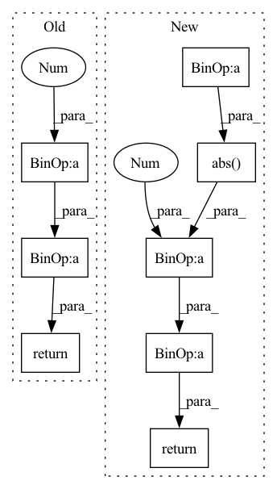

Pattern ID :37667

Before Change
float: The Normalized Mean Absolute Error in percentage.
delta = np.max(y) - np.min(y) + tsl.epsilon
return mae(y_hat, y) * 100 / delta
def mape(y_hat: FrameArray, y: FrameArray) -> float:
After Change
float | np.ndarray: The Normalized Mean Absolute Error in percentage.
delta = np.max(y) - np.min(y) + tsl.epsilon
err = 100 * np.abs(y_hat - y) / delta
return _masked_reduce(err, reduction, mask, nan_to_zero)
def mape(y_hat: FrameArray, y: FrameArray, mask: Optional[FrameArray] = None,
In pattern: SUPERPATTERN
Frequency: 3
Non-data size: 8
Instances
Fragment ID: 108231411
Project Name: torchspatiotemporal/tsl
Commit Name: ab39739efc2636cd5fc6f865bef7270490e74a38
Time: 2022-10-28
Author: stefano.imoscopi@usi.ch
File Name: tsl/metrics/numpy/functional.py
M Class Name: AnonimousClass
N Class Name: AnonimousClass
M Method Name: nmae(5)
N Method Name: nmae(2)
M Parent Class:
N Parent Class:
M File Name: tsl/metrics/numpy/functional.py
N File Name: tsl/metrics/numpy/functional.py
M Start Line: 76
M End Line: 95
N Start Line: 76
N End Line: 113
'>
Before Change
def huber_loss(x, delta=1.0):
// https://en.wikipedia.org/wiki/Huber_loss
return tf.where(
tf.abs(x) < delta,
tf.square(x) * 0.5,
delta * (tf.abs(x) - 0.5 * delta)
)
After Change
def huber_loss(input, target, delta=1.):
// type: (Tensor, Tensor, float) -> Tensor
// https://en.wikipedia.org/wiki/Huber_loss
t = torch.abs(input - target)
return torch.where(
t < delta, 0.5 * t ** 2,
t * delta - (0.5 * delta ** 2)
)
'>
Fragment ID: 108231412
Project Name: erfanmhi/deep-reinforcement-learning-cs285-pytorch
Commit Name: 4646702c3aa2ad6dc2656c704ee22b25b558e3ee
Time: 2020-08-16
Author: mhi.erfan1@gmail.com
File Name: hw3/cs285/infrastructure/dqn_utils.py
M Class Name: AnonimousClass
N Class Name: AnonimousClass
M Method Name: huber_loss(3)
N Method Name: huber_loss(2)
M Parent Class:
N Parent Class:
M File Name: hw3/cs285/infrastructure/dqn_utils.py
N File Name: hw3/cs285/infrastructure/dqn_utils.py
M Start Line: 141
M End Line: 145
N Start Line: 219
N End Line: 226
'>
Before Change
def huber_loss(x, delta=1.0):
// https://en.wikipedia.org/wiki/Huber_loss
return tf.where(
tf.abs(x) < delta,
tf.square(x) * 0.5,
delta * (tf.abs(x) - 0.5 * delta)
After Change
def huber_loss(input, target, delta=1.):
// type: (Tensor, Tensor, float) -> Tensor
// https://en.wikipedia.org/wiki/Huber_loss
t = torch.abs(input - target)
return torch.where(
t < delta, 0.5 * t ** 2,
t * delta - (0.5 * delta ** 2)
)
def sample_n_unique(sampling_f, n):
'>
Fragment ID: 108231364
Project Name: erfanmhi/deep-reinforcement-learning-cs285-pytorch
Commit Name: 5311fe388264d564443693329dbacf832ed6d349
Time: 2020-08-24
Author: mhi.erfan1@gmail.com
File Name: hw4/cs285/infrastructure/dqn_utils.py
M Class Name: AnonimousClass
N Class Name: AnonimousClass
M Method Name: huber_loss(3)
N Method Name: huber_loss(2)
M Parent Class:
N Parent Class:
M File Name: hw4/cs285/infrastructure/dqn_utils.py
N File Name: hw4/cs285/infrastructure/dqn_utils.py
M Start Line: 141
M End Line: 145
N Start Line: 219
N End Line: 226